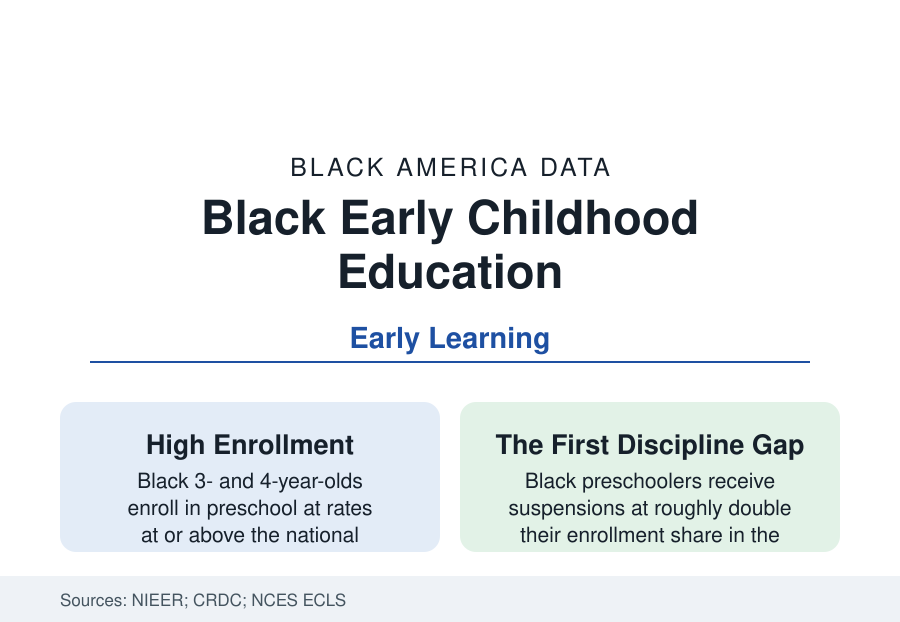

Black Education
Black Children in Early Childhood: Head Start, Pre-K, and the First Gap
Black children enroll in preschool at high rates — and the system's quality and discipline data already diverge before kindergarten. The early childhood file.

The education data begin before kindergarten, and the early childhood file holds the system's original pattern: Black three- and four-year-olds enroll in preschool at rates at or above the national average — Black families use early education at high rates — while the quality distribution, the funding, and the discipline data of the preschool years already forecast the K-12 files. This article reports the earliest education data in the reference.
Enrollment and the Program Mix
The NCES and NIEER data distribute Black preschoolers across a stratified system: Head Start (the federal program for low-income children, enrolling Black children at roughly a third of its million-child total — the largest single share of any group), state pre-K (whose expansion across the South and the universal programs in DC, New York City, Oklahoma, and Georgia — an early state-preK pioneer whose lottery system enrolls Black children in depth — have made the pre-K classroom the file's growth sector), private and church-affiliated preschools (the Black church's early-learning centers forming a parallel network in the community data), and family childcare homes, where a large share of Black toddlers' care happens outside the center system entirely and outside most quality data. The unmet-need file is the mirror image: eligible-but-unserved Head Start children (the program reaches roughly half of eligible preschoolers and a tenth of eligible infants in the federal estimates), childcare deserts in the rural and poor urban geographies of the other profiles, and the subsidy system's waiting lists.
Quality: The Distribution Within the Enrollment
Enrollment parity conceals the quality gradient the observational studies measure: the classroom quality instruments (teacher-child interaction scores in the CLASS-based research) and the structural measures (teacher credentials and pay — the early childhood workforce is itself heavily Black and Latina women paid at the very floor of the education wage scale, the care-workforce profile in miniature) stratify by the same geography as everything else in this reference. The pay data are the file's self-indictment: the nation staffs its highest-return educational intervention (the early-childhood return-on-investment literature — Perry Preschool and Abecedarian, both predominantly Black cohorts, anchor the famous seven-to-thirteen-percent annual return estimates) with its lowest-paid teachers, and the workforce's turnover data price the consequence into the children's continuity of care.
Discipline Before Kindergarten
The Civil Rights Data Collection's preschool discipline numbers are among the most cited in all of education data: Black children form roughly a fifth of public preschool enrollment and roughly two-fifths or more of preschoolers suspended — in the data's starkest cell, receiving multiple out-of-school suspensions at rates that made 'preschool suspension' a policy phrase. The research literature's explanations run from the implicit-bias experiments (the Yale eye-tracking study of preschool teachers watching Black boys for trouble is the field's most famous design) to the resource data (programs with behavioral consultants expel less in the intervention studies). The expulsion-prevention policies — several states now ban or restrict preschool expulsion in their early-learning systems — and the mental-health-consultation model are the file's active remedy layer, with the CRDC series as their report card.
Readiness and the First Measured
The kindergarten-entry assessments the states increasingly administer record the readiness gaps the K-12 data inherit — Black children entering with lower measured literacy and numeracy on average in the ECLS cohort studies, the gaps substantially (not entirely) accounted for by income and home-learning variables in the decomposition literature — and the longitudinal follow-through is the file's most debated science: the fade-out literature (Head Start's measured test gains converging by the early grades in the federal impact study) against the life-outcome record (the Perry and Abecedarian adults' earnings, health, and family data, and Head Start's quasi-experimental long-run gains), with the field's working conclusion — quality and dosage decide, and the K-3 receiving environment squanders or compounds — now embedded in the P-3 alignment programs of the district data.
Reading the Early Childhood Data
The first chapter of Black education in America is written by age five, in systems that enroll Black children eagerly, staff their classrooms with underpaid Black women, discipline their boys at double rates, and hand the elementary schools a gap everyone then pretends was discovered in third grade. The early childhood file is the reference's argument for reading every later table as a sequel.
More in Black Education
Black Educational Attainment: High School Parity, the College Gap
About 89 percent of Black adults hold a high school diploma and one in four holds a bachelor's degree or higher — the attainment ladder, the college completion gap, and the generational trend.
Historically Black Colleges and Universities: Enrollment and Degrees
More than 100 HBCUs enroll roughly 290,000 students and award about one in six Black bachelor's degrees — an outsized share from a small sector. The federal education data.
Black College Enrollment: 2.4 Million Students
About 2.4 million Black students are enrolled in American colleges — nearly two-thirds of them women. The NCES enrollment data by sector, level, and trend.
Source: National Institute for Early Education Research, State of Preschool Yearbook; U.S. Department of Health and Human Services, Head Start data; NCES Early Childhood Longitudinal Study; Civil Rights Data Collection preschool data.